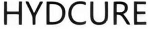

Trade Mark Journal No.2026/007 13 February 2026
WO0000001898715 (3,30,32)
Office of origin: China
Date of International Registration:14 May 2025
Date of designation in the UK:
14 May 2025

- Class 3
- Non-medical bath salts; non-medicated cleansers or deodorants for intimate personal hygiene purposes; bath foam; facial cleanser; cleansing lotion; shampoo; hair conditioner; soap; hair shampoo; hair softener [hair conditioners]; soap powder; paste for hand washing; non-medical bath preparations; dry shampoos; dish soap; polishing preparations; abrasive paste; essential oils; hair removal preparations; anti-wrinkle cream; skin whitening creams; body powder; non-medical prickly heat lotion; beauty creams; cosmetic cleaners; wax for hair removal; cosmetics; antiperspirants (cosmetics); non-medical massage gel; non-medical balms; deodorant for personal or animal use; collagen preparations for cosmetics purposes; cotton pad soaked in makeup remover; cooling spray for makeup; acne cream; lip gloss; non-medical disposable steam-heated hot compress masks; anti-freckle cream; non-medical prickly heat powder; teeth whitening patches; breath freshener for personal hygiene; dentifrices; toothpaste; non-medical mouthwashes; breath freshening strips; mouthwashes, not for medical purposes; incense; air fragrances.
- Class 30
- Flavourings, other than essential oils, for coffee; coffee; tea; tea drinks; sugar; sweets; honey; molasses for food; royal jelly; propolis; grain-based snacks; pastry; instant rice; cereal products; hulled cereals for human consumption; edible starch; ice cream; condiments for food other than essential oils; baking soda (baking soda for cooking).
- Class 32
- Beer-based cocktails; non-alcoholic fruit drinks; whey drinks; fruit juice; water (beverage); non-alcoholic beverages; smoothie; protein-rich sports drinks; energy drinks; powders for making fruit-based beverages; plant-based beverages; syrup for beverages; isotonic drinks; soft drink.
Shanghai Qingyu Biotechnology Co., Ltd.
Representative: Zhejiang Inpro Law Firm, Room 805-808、813-815, Chong’an Shengshi Center,, No.303 Pingshui Street, Gongshu District,, Hangzhou City, Zhejiang Province, CHINA